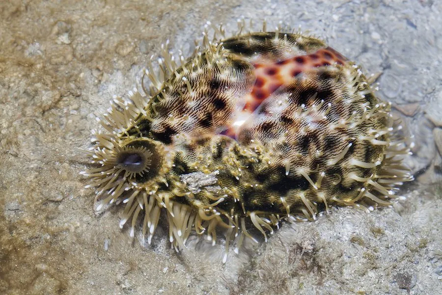

软体动物 · 动物界
虎斑宝螺 Cypraea tigris

贝壳光滑如瓷、布满虎皮斑点的宝螺，壳口细齿如梳，是贝壳收藏中的经典种类，其贝壳在中国古代曾被当作货币使用。
- 分类
- 门软体动物门纲腹足纲目中腹足目科宝螺科属宝螺属
- 栖息环境
- 热带珊瑚礁和沙底，水深 1–30 m，多在夜间活动
- 地理分布
- 印度洋—太平洋热带海域，从东非、红海到日本南部、澳大利亚和波利尼西亚，中国南海及台湾周边有分布
- 保护级别
- 暂无评估；中国未列入国家重点保护野生动物名录
物种志
虎斑宝螺的贝壳呈卵圆形，壳面光滑如瓷，底色白色或乳白，布满黑褐色的大小斑点，像虎皮的斑纹，因此得名。壳口狭长，两侧的唇缘长着一排细齿，这是宝螺的重要鉴定特征。成体壳长一般 8–12 cm，贝壳可以把软体完全包住。
虎斑宝螺分布于印度洋—太平洋的热带珊瑚礁，从东非、红海到日本南部、澳大利亚和波利尼西亚，中国南海及台湾周边有分布。它栖息于礁区和沙底，水深 1–30 m，多为夜行性，白天藏在洞穴和礁石下。虎斑宝螺以藻类、海绵和有机碎屑为食，靠齿舌刮取食物。它是雌雄异体的动物，交配后把卵囊附着在礁石上。宝螺的贝壳光滑美丽，是贝壳收藏中的经典种类；在中国古代，宝螺的贝壳曾被当作货币使用，“宝贝”一词就与贝币有关。目前它没有IUCN 的正式评估，中国未将其列入国家重点保护野生动物名录。
形态与习性
- 食性以藻类、海绵和有机碎屑为食，靠齿舌刮取
- 壳长一般 8–12 cm
- 栖息深度珊瑚礁和沙底，水深 1–30 m
- 贝壳特征壳面光滑如瓷，两侧唇缘有一排细齿
- 繁殖雌雄异体，交配后把卵囊附着在礁石上
- 历史用途贝壳在古代曾被当作货币使用
趣味知识
- 虎斑宝螺壳面光滑如瓷，黑褐色斑点像虎皮，是宝螺中的名品。
- 中国古代曾把宝螺的壳当作货币使用，“宝贝”一词就与贝币有关。
- 宝螺的壳口两侧有一排细齿，这是它的重要鉴定特征。